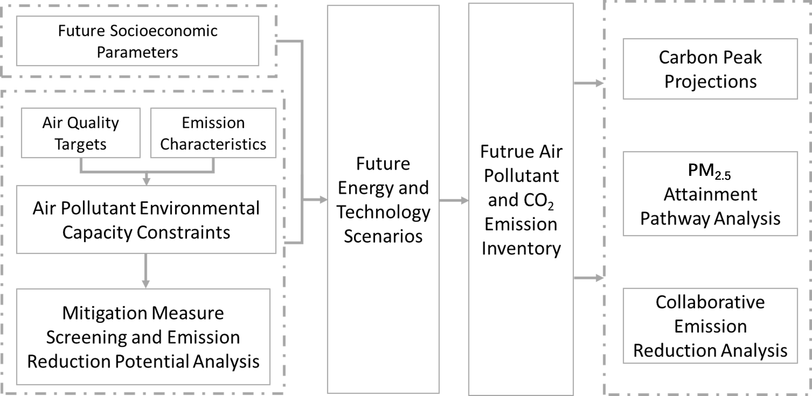
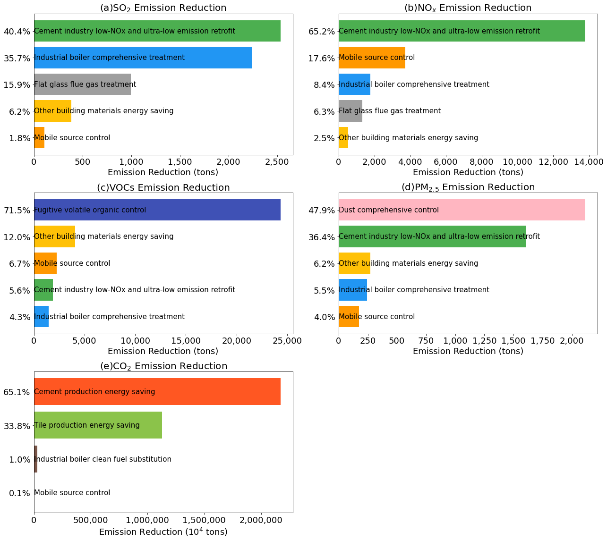
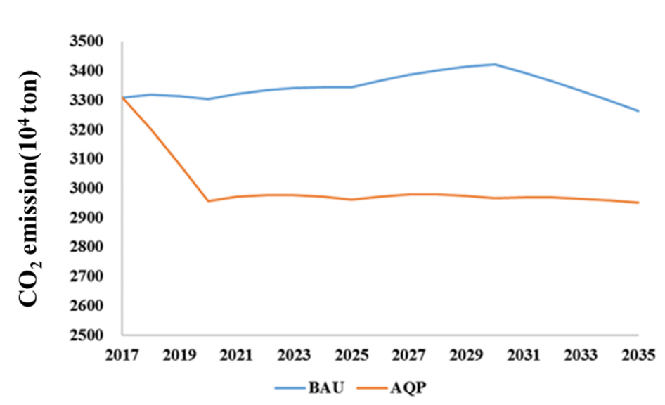
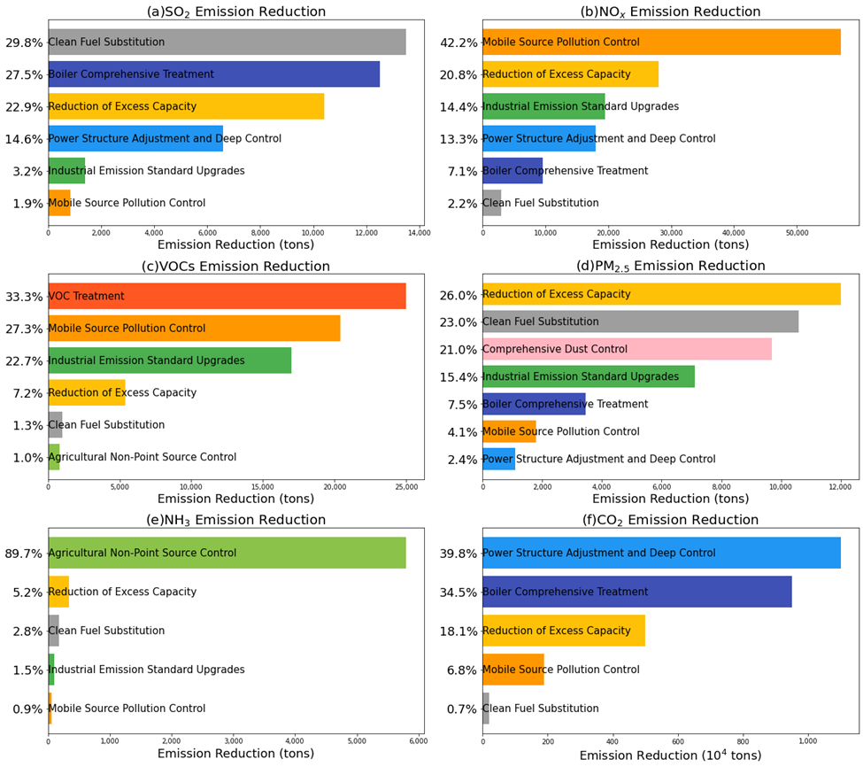
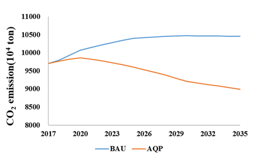
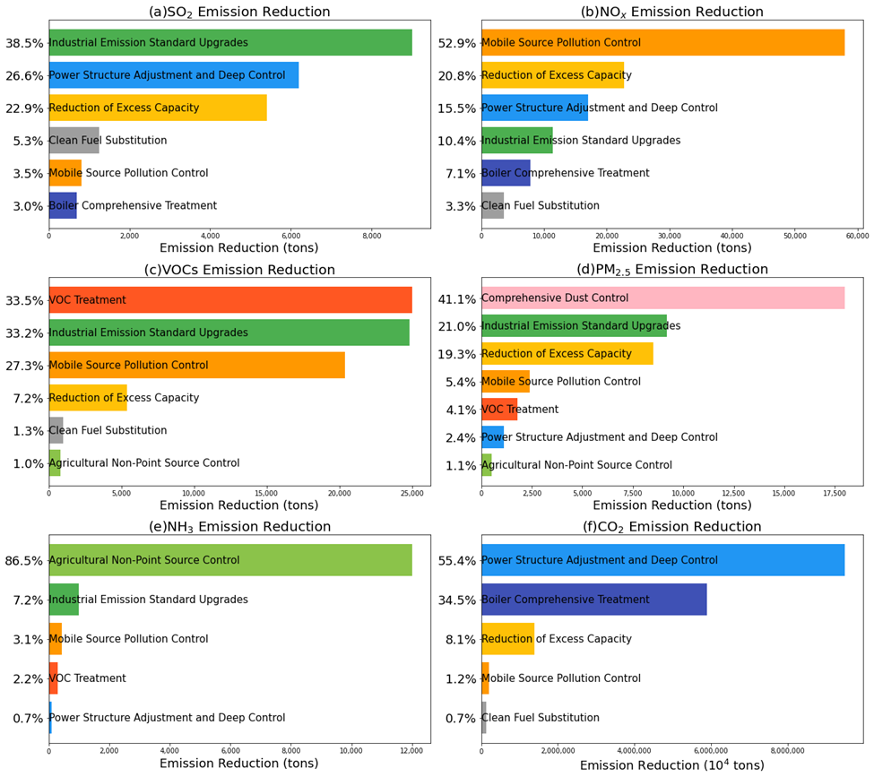
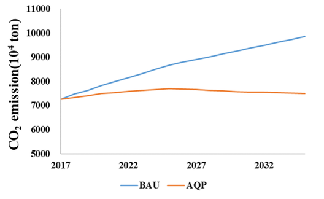

Background
Due to fossil fuel-dominated primary energy structure, China's greenhouse gas and air pollutant emissions have high homology. Strengthening the top-level design, accelerating structural adjustment and tapping the potential of co-reduction could be the answer to addressing the challenges. Cities are the basic unit for policy implementation and the key areas for synergistical emission control of carbon dioxide and conventional pollutants in the future. At present, many cities such as Guangzhou, Dalian, and Chengdu have already carried out research on reaching air quality standard. Also, some cities such as Beijing and Wuhan have proposed carbon emission peak targets. However, few cities can combine these two targets together well. Affected by various factors, Chinese cities show different development levels, industrial structures and emission characteristics. Therefore, the future development strategies and emission reduction pathways for different cities could be significantly distinct. Formulating synergistic emission reduction pathways and exploring the relationship between urban carbon peak and air quality standards could be meaningful for achieving city-level co-reduction in China.
Method
Figure 1 illustrates the roadmap for collaborative emission reduction of carbon dioxide and air pollutants in Chinese cities. First, together with air quality targets and emission characteristics, we can estimate air pollutant environmental capacity constraints. An air quality modeling system is established using the WRF-CMAQ model. Simulations are conducted for January, April, July, and October of baseline to estimate the annual average concentrations of PM2.5 and its key components. According to the phased targets outlined in the planning objectives and the simulated proportions of sulfate, nitrate, ammonium, and primary PM2.5 in total PM2.5 for January, April, July, and October in base year, annual average target concentrations are set for PM2.5 and each key component. A new multi-pollutant emission inventory is calculated based on the reduction plans. The annual average concentration of PM2.5 is simulated. These steps are repeated until the annual average PM2.5 concentration meets the target, thereby determining the environmental capacity of SO₂, NOₓ, and primary PM2.5.
Based on these constraints, mitigation measure screening and emission reduction potential analysis is conducted, taking into account emission reduction costs and city-specific conditions, with a focus on selecting measures that offer significant co-benefits. These inputs feed into the construction of future energy and technology scenarios, which are then used to generate a future air pollutant and CO₂ emission inventory. The resulting data support three key analyses: carbon peak projections, PM2.5 attainment pathway analysis, and collaborative emission reduction analysis, ensuring an integrated approach to achieving both air quality improvement and climate goals.

Fig 1. Roadmap of designing the emission reduction actions for cities
Case study: Huzhou
Huzhou is a representative non-industrial city located in the northern part of Zhejiang Province. It borders Jiaxing to the east and Hangzhou to the south, with jurisdiction over 2 districts and 3 counties. The city covers an area of 5,820 square kilometers.
The annual average PM₂.₅ concentration in 2017 was 42.2 µg/m³, exceeding the national Grade II standard by approximately 20.6%. The 90th percentile of the daily maximum 8-hour average O₃ concentration was 186.6 µg/m³, about 16.6% above the standard limit. Considering Huzhou's current air quality and feasible action plans, the city's air quality compliance target is to meet the national Grade II PM₂.₅ standard of 35 µg/m³ by 2020. In summary, to achieve air quality standards in Huzhou, priority should be given to addressing particulate matter pollution. At the same time, coordinated control of NOₓ, VOCs, and particulate matter should be strengthened to prevent further deterioration of ozone (O₃) pollution.
Based on Huzhou's 2017 air pollutant emission inventory and projected increases in emissions from newly added motor vehicles and natural gas usage by 2020, an evaluation of emission reduction measures indicates that by 2020, the total emissions of SO₂, NOₓ, VOCs, and primary PM₂.₅ will be reduced by 28%, 33.8%, 38.5%, and 39.9%, respectively, compared to 2017 levels. As shown in Figure 2, A comparative analysis of various measures reveals that the most significant contribution to SO₂ reduction comes from the phase-out of cement production capacity combined with ultra-low emission upgrades, accounting for approximately 40.4% of the total reduction. For NOₓ, the same set of cement-related measures contributes the highest share, around 65.2% of total NOₓ reduction. VOCs reduction is driven primarily by volatile organic compound control measures, which account for 71.5% of the total VOCs reduction. The most effective measure for reducing PM₂.₅ is comprehensive dust control, contributing about 47.9% of total reduction. As for CO₂, the elimination of cement production capacity also has the greatest impact, accounting for approximately 65.1% of total CO₂ emission reductions.

Fig 2. Measure-specific emission reductions in Huzhou.
For carbon emissions in Huzhou(Figure 3), under the BAU (Business-as-Usual) scenario, the pace of energy structure transformation and adoption of energy-saving technologies across sectors remains relatively slow. However, due to structural economic adjustments, a declining share of energy-intensive industries, and increased use of imported electricity, the growth rate of carbon emissions is expected to slow, peaking around 2030.Under the AQP (Air Quality Plan) scenario, several cement and brick enterprises will be shut down between 2017 and 2020 to ensure compliance with air quality standards by 2020. The cement industry, being both energy- and carbon-intensive (with emissions from both fuel combustion and the production process), presents significant carbon reduction potential. As a result, Huzhou's carbon emissions are projected to peak as early as 2017, at 95.6 million tons. After 2020, carbon emissions in the city are expected to remain relatively stable, with no major increases, and to start declining gradually from 2028 onward. Compared to the BAU scenario, carbon emissions in the AQP scenario are reduced by 3.46 million tons in 2020, 3.82 million tons in 2025, and 4.55 million tons in 2030.

Fig 3. CO2 emissions projections in Huzhou.
Case study: Shijiazhuang
Shijiazhuang is a representative coal-consuming city and serves as the capital of Hebei Province. It is located in the south-central part of Hebei, bordering Hengshui to the east, Xingtai to the south, Shanxi Province to the west, and Baoding to the north. The city covers a total area of 15,848 square kilometers. By the end of 2017, Shijiazhuang had a permanent population of 10.88 million, with an urbanization rate of 61.6%.
In 2017, the annual average PM₂.₅ concentration in Shijiazhuang was 86 µg/m³, exceeding the national Grade II standard limit by 145.7%. The annual average PM₁₀ concentration was 158 µg/m³, exceeding the standard by 125.7%. The annual average NO₂ concentration was 54 µg/m³, 54.3% higher than the standard limit of 35 µg/m³. The 90th percentile of the daily maximum 8-hour average O₃ concentration was 201 µg/m³, surpassing the standard limit by 24.3%.
Based on Shijiazhuang's 2017 air pollutant emission inventory and projected emission increases from newly added motor vehicles and natural gas usage by 2033, and taking into account the city's planned adjustments in energy, industrial, transportation, and land-use structures, it is estimated that by 2033, total emissions of SO₂, NOₓ, VOCs, NH₃, and primary PM₂.₅ will be reduced by 72.6%, 72.2%, 53.1%, 49.0%, and 71.7%, respectively, compared to 2017 levels. As shown in Figure 4, a comparative analysis of various emission reduction measures shows that the largest contributor to SO₂ reduction is the substitution of cleaner fuels, accounting for approximately 29.8% of the total reduction. The most effective measure for NOₓ reduction is pollution control from mobile sources, contributing around 42.2%. For VOCs, the most significant reduction comes from targeted VOC control measures, accounting for 33.3% of the total. The primary driver for PM₂.₅ reduction is the elimination of excess industrial capacity, which contributes 26.0%. For NH₃, agricultural non-point source management is the dominant factor, contributing 89.7% of the total reduction. In terms of CO₂, the adjustment and deep decarbonization of the power sector contribute the most, accounting for 39.8% of total CO₂ emission reductions.

Fig 4. Measure-specific emission reductions in Shijiazhuang.
Based on the aforementioned local pollutant reduction rates in Shijiazhuang, the city’s 2033 emission inventory was established. The evaluation comprehensively considered the effects of both local emission reductions and reductions in surrounding regions. In the surrounding areas, emissions of SO₂, NOₓ, primary PM₂.₅, NH₃, and VOCs are assumed to be reduced by 50%, 50%, 50%, 45%, and 50%, respectively, which is consistent with the regional environmental capacity targets. Simulation results show that, after the implementation of pollution control measures, the PM₂.₅ concentration in Shijiazhuang is projected to decrease by 63.9% (a reduction of 55.0 µg/m³) compared to 2017, reaching approximately 31.0 µg/m³ by 2033. Among this, local emission reductions alone are expected to account for a decrease of 38.0 µg/m³, while reductions in pollutant transport from surrounding regions contribute an additional 17.0 µg/m³ decrease. The 90th percentile of the daily maximum 8-hour average O₃ concentration are expected to be 150.8 µg/m³, reaching the standard limit.
Carbon emissions in Shijiazhuang, simulated using the LEAP model, are shown in Figure 5. Under the Business-as-Usual (BAU) scenario, improvements in the energy structure across sectors are limited. However, due to adjustments in the overall industrial structure, the growth rate of carbon emissions is expected to slow, eventually peaking around 2030. Under the Air Quality Planning (AQP) scenario (corresponding to the condition in which Shijiazhuang meets air quality standards by 2033) the city's carbon emissions are projected to peak as early as 2020, at 95.6 million tons. Compared to the BAU scenario, the AQP scenario results in carbon emission reductions of 8.46 million tons in 2025, 13.48 million tons in 2030, and 15.82 million tons in 2035.

Fig 5. CO2 emissions projections in Shijiazhuang.
Case study: Zhengzhou
Zhengzhou is a representative fast-developing industrial city and serves as the capital of Henan Province. It is located in the north-central part of the province and has jurisdiction over 6 districts, 5 county-level cities, and 1 county, with a total area of 7,446 square kilometers.
The annual average PM₂.₅ concentration in 2017 was 66 µg/m³, exceeding the national Grade II standard limit by 88.6%. Considering the current air quality status, the feasible control measures, and Zhengzhou’s urban development plans, the city has set a target for air quality compliance: by 2028, the annual average PM₂.₅ concentration will meet the national Grade II standard of 35 µg/m³.
Based on Zhengzhou’s 2017 emissions inventory and projected increases in emissions from new vehicles and natural gas consumption by 2028, as well as adjustments in energy, industry, transportation, and land use, emission reduction measures are expected to result in decreases of 74.5% in SO₂, 70.4% in NOₓ, 56.4% in VOCs, 43.2% in NH₃, and 65.7% in primary PM₂.₅ compared to 2017 levels. As shown in Figure 6, a comparative analysis of the contributions from various measures shows that the largest contributor to SO₂ reduction is industrial emission standard upgrades, accounting for approximately 38.5% of the total reduction. The greatest reduction in NOₓ comes from mobile source pollution control, contributing 52.9%. For VOCs, the most effective measure is targeted VOC control, which contributes 33.5% of the total reduction. Agricultural non-point source management is the primary driver of NH₃ reduction, accounting for 86.5%. For PM₂.₅, the most significant reductions come from comprehensive dust control, contributing 41.1% of the total. In terms of CO₂, the most impactful measure is power structure adjustment and deep decarbonization, contributing 55.4% of total CO₂ reduction.

Fig 6. Measure-specific emission reductions in Zhengzhou.
Under the implementation of comprehensive pollution control measures and structural adjustments, Zhengzhou is expected to make substantial progress in improving air quality by 2028. Simulation results indicate that the city’s annual average PM₂.₅ concentration will decrease significantly from 66 µg/m³ in 2017 to approximately 35 µg/m³ in 2028, achieving compliance with the national Grade II ambient air quality standard. The 90th percentile of the daily maximum 8-hour average O₃ concentration in 2028 is expected to be 159.2 µg/m³, reaching the standard limit. This reduction reflects the combined effects of local emission reductions and improvements in regional air quality, as well as optimized energy, industrial, transportation, and land-use structures.
In terms of carbon emissions, Figure 7 shows that under the Air Quality Planning (AQP) scenario—aligned with the city’s air quality compliance target—Zhengzhou’s total carbon emissions will reach their peak around 2020. Although the Business-as-Usual (BAU) scenario assumes continued economic growth and limited structural reform, leading to a delayed carbon peak around 2030, the AQP scenario demonstrates that with active energy restructuring, industrial upgrades, and clean transport development, early carbon peaking is achievable. The analysis shows that by 2028, compared to the BAU pathway, the AQP scenario results in significant reductions in carbon emissions across multiple sectors, especially through coal consumption control, power sector decarbonization, and the promotion of low-carbon urban development. This highlights the co-benefits of air quality improvement and climate change mitigation, and confirms that coordinated policy efforts can enable Zhengzhou to simultaneously achieve its air pollution control and carbon neutrality goals.

Fig 7. CO2 emissions projections in Zhengzhou.